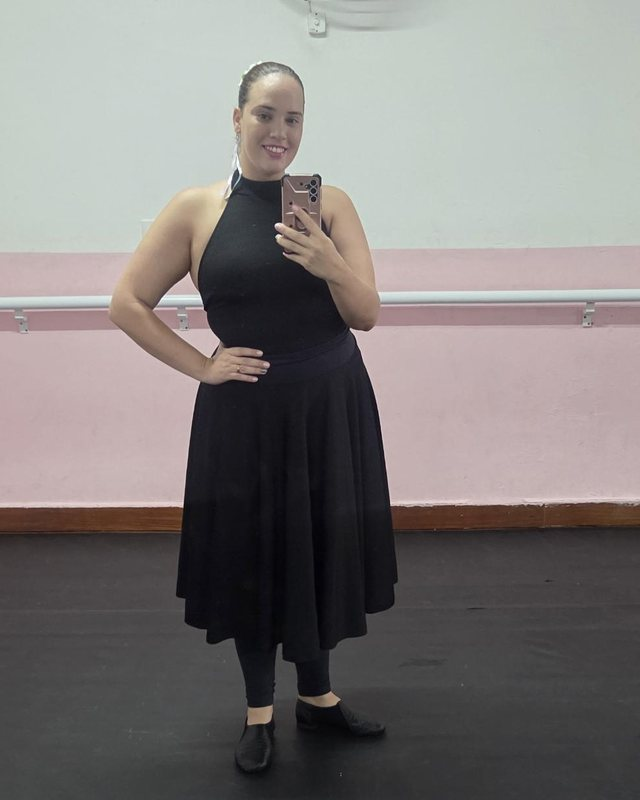

Mini Curso de Ballet InfantilDa Brincadeira à Técnica
Aprenda a planejar aulas de ballet para crianças de 2 a 6 anos com intenção pedagógica: entendendo o desenvolvimento infantil, transformando brincadeiras em aprendizagem e construindo as bases do ballet no tempo certo de cada criança.
“Antes de caminhar, a criança dança.”
Prof. Le Sartori
Para Jean Piaget, a criança conhece o mundo primeiro pelo corpo e pela ação. O movimento é a primeira linguagem da infância. E é por ele que o ballet infantil começa.
A ESSÊNCIA DA METODOLOGIA
“A criança vive a história. A professora compreende o objetivo.”
Caminhar entre flores parece só brincadeira. Mas a professora que entende o objetivo sabe que ali estão acontecendo experiências muito específicas, e planeja cada uma delas.
Deslocamento
caminhar entre as flores
Percepção espacial
desviar e mudar de direção
Mudança de nível
abaixar para colher a flor
Controle postural
levantar e equilibrar-se


QUEM VAI TE ENSINAR
Letícia SartoriProf. Le Sartori
Bailarina há cerca de 30 anos, professora de ballet, coreógrafa e educadora. Fundadora e diretora da LENDA — Escola Nacional de Dança e Arte, em Praia Grande (SP), onde ensina crianças, adolescentes e adultos e forma bailarinas.
Com formação em Engenharia Eletrônica, traz um olhar analítico e científico para a pedagogia da dança, sem perder a essência afetiva e lúdica do ensino.
~30
anos de ballet
+200
alunas na LENDA
2
unidades em Praia Grande
UMA PERGUNTA PARA VOCÊ
Você já parou para pensar no que uma criança realmente aprende quando está brincando na aula de ballet?
Flores no chão, bambolês, tecidos, histórias e músicas encantam as crianças. Mas ensinar ballet infantil não é só escolher atividades divertidas. Quando você sabe o que está ensinando, por que está ensinando e como observar o desenvolvimento de cada habilidade, a aula bonita vira uma aula que realmente ensina.
PARA QUEM É
Feito para quem ensina, ou quer ensinar, crianças de 2 a 6 anos
Professoras de ballet infantil
que querem planejar com mais segurança e saber o porquê de cada atividade.
Bailarinas começando a dar aula
que dominam a técnica, mas ainda não sabem como adaptá-la para os pequenos.
Estudantes de dança
que querem se preparar para o ensino infantil desde já.
Profissionais da infância
que trabalham com movimento e crianças de 2 a 6 anos.
AO FINAL DO MINI CURSO
Você vai sair sabendo
Compreender melhor o desenvolvimento infantil e como ele muda de uma idade para outra.
Identificar objetivos pedagógicos adequados para cada faixa etária.
Relacionar brincadeiras com habilidades motoras, sem transformar a aula em exigência técnica disfarçada.
Aplicar três aulas práticas temáticas demonstradas passo a passo.
Organizar um planejamento de aula simples e com objetivos claros.
Introduzir a técnica de forma progressiva e segura, sem forçar en dehors, flexibilidade ou amplitude.
O CONTEÚDO
9 videoaulas, da teoria à sala de aula
Cerca de 90 minutos de conteúdo, para assistir quando e onde quiser.
ABERTURA · FUNDAMENTOS
A arte de ensinar ballet infantil com intenção
Desenvolvimento motor aplicado ao ballet infantil
MÓDULO 1 · PETIT BABY · 2 ANOS
Compreendendo a criança de 2 anos
Aula prática: Jardim Encantado
MÓDULO 2 · BABY CLASS · 3 E 4 ANOS
Da exploração à organização do movimento
Aula prática: Confeitaria Encantada
MÓDULO 3 · GRAND BABY · 5 E 6 ANOS
Preparando o corpo para os fundamentos do ballet
Aula prática: Reino das Neves
ENCERRAMENTO
09Como planejar uma aula que realmente ensina: do objetivo à observação, passo a passo.
MATERIAIS E BÔNUS
Além das videoaulas, você recebe
3 e-books dos módulos
Petit Baby, Baby Class e Grand Baby: desenvolvimento, objetivos e conteúdo de cada fase.
Aula temática: Dia da Bailarina
Uma aula completa inspirada em Coppélia, pronta para aplicar com turmas de 3 a 6 anos.
Playlist pedagógica
Músicas organizadas por faixa etária e objetivo de cada atividade.
Certificado de conclusão
Emitido em nome de Letícia Sartori ao concluir o mini curso.
Mini Curso de Ballet Infantil
Da Brincadeira à Técnica
de R$ 197 por
R$ 67
à vista no Pix ou parcelado no cartão
✓ 9 videoaulas 100% online (cerca de 90 min)
✓ 3 e-books dos módulos
✓ Aula temática Dia da Bailarina
✓ Playlist pedagógica
✓ Certificado de conclusão
✓ Acesso por 1 ano
Promoção válida até 30 de novembro · Compra segura pela Kiwify
Garantia de 7 dias. Se não for para você, é só pedir o reembolso dentro desse prazo.
Perguntas frequentes
O curso é presencial ou online?
100% online. São videoaulas gravadas que você assiste no celular, tablet ou computador, no seu ritmo.
Preciso ter experiência dando aula?
Não. O mini curso serve tanto para quem já dá aula quanto para bailarinas e estudantes que querem começar a ensinar crianças.
Quanto tempo dura?
São 9 videoaulas, com cerca de 90 minutos no total, além dos materiais complementares.
É uma formação completa?
É um mini curso introdutório, com conteúdo aprofundado na medida certa da sua duração. Ele é o primeiro passo para quem quer ensinar ballet infantil com mais conhecimento e intenção.
Como recebo o acesso?
Logo após a confirmação do pagamento, você recebe por e-mail o acesso à área de membros na Kiwify.